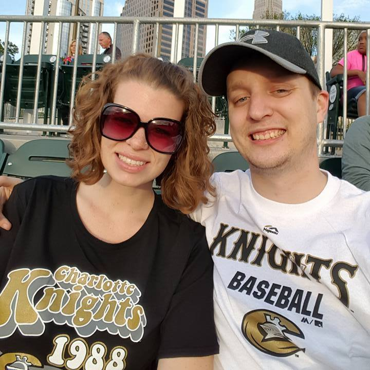

About Me
 Hello! I am an Ohio native, sports-enthusiast, and science nerd. I received my Bachelor's degree in Environmental Science at Ashland University. My initial aspirations were to become a meteorologist with a specific focus in climatology. I received my initial introduction into the coding world when I completed an internship with the National Oceanic and Atmospheric Administration (NOAA). The internship tasked me with evaluating rain sensors with lightning sensors for an entire calendar year, which required me to learn the Fortran language to complete my study. I developed a hobby that summer as I became quite intrigued with how I could tell a computer to process data and to produce graphs and images. I went on to learn C++ the next school year. Toward the end of my senior year, I realized that meteorology was not for me and that I needed to do a little soul searching. I applied to a program called TEACH Charlotte toward the end of my senior year, and after a rigorous summer teaching program, I was hired as a Chemistry teacher at West Charlotte High School. I am now in my 4th year teaching, and teaching has provided so many valuable experiences. I feel I have completed my soul searching, and I am ready to pursue the hobby I developed five years ago and turn it into a career! I am ready for the challenges and excitements that come with being a web developer.
I was born and raised in Ohio and I moved to Charlotte right after I graduated from college in June 2014. My Ohio roots run deep as I am die-hard Cleveland fan. It does not matter which sport. That means I get the glories that the Cleveland Indians and Cleveland Cavaliers provide. It also unfortunately means I get all the sorrows that the Cleveland Browns provide year-in and year-out. I can assure you that my head is filled with some of the most useless sport knowledge that you can think of. However, if you ever need an extra person for sports trivia then I am your man. I am willing to carry the team as well! In my free time, I enjoy playing video games and exploring numerous areas of Charlotte with my wife. My wife is by far my best friend; therefore, if you see me out in the community, you will likely see me with her. We love going to the movies, breweries and wineries, and sporting events. So I know we just met and this is crazy, but my contact sheet is ready. So hire me, maybe?